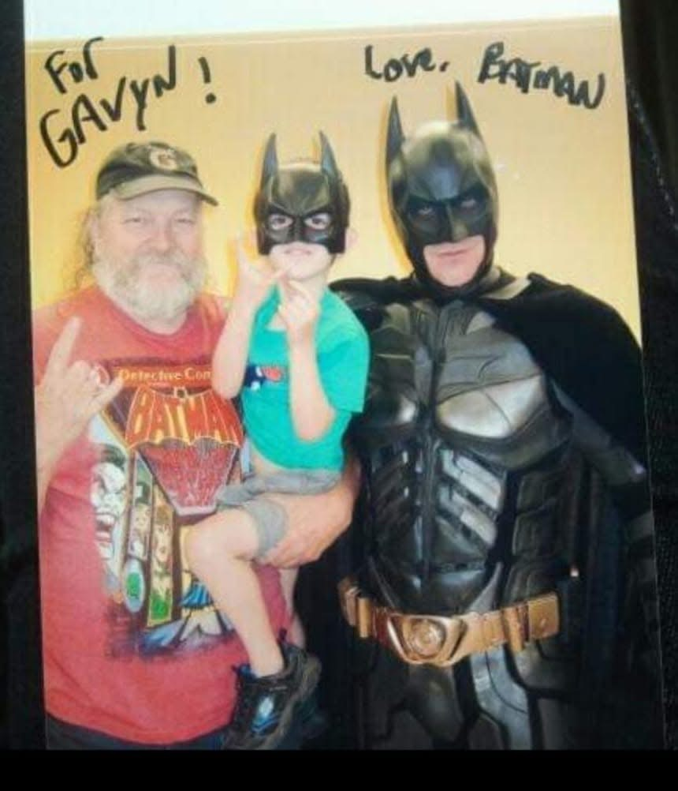
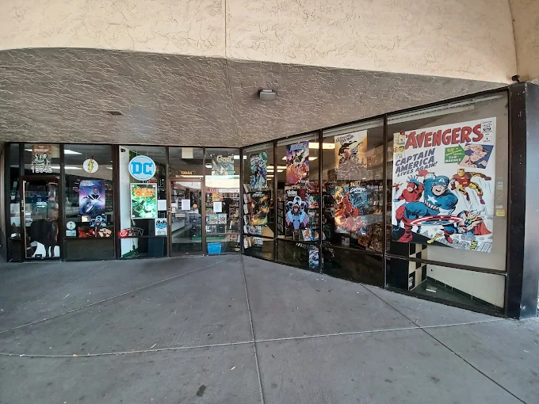
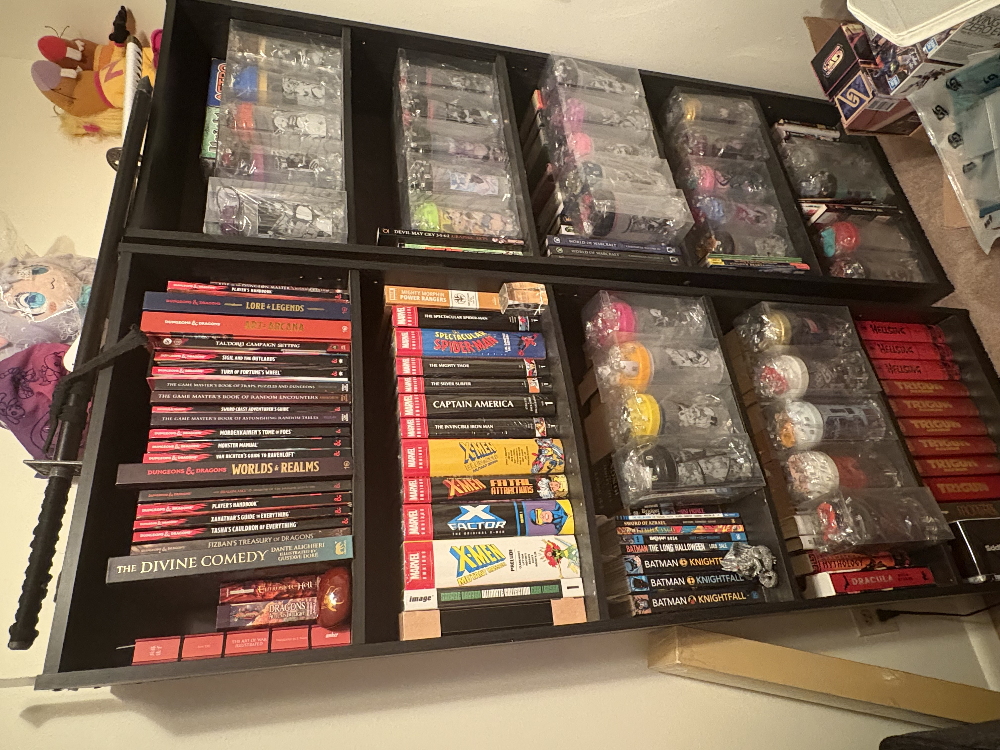

How a Veteran Taught Me to Spot Value:
Condition, Context, and the Stories Behind the Issues

I have to thank John for getting me into a new hobby; collecting comic books, graphic novels and omnibuses, one that for him has been going on for almost 60 years (he’s 71). His collection ranges far and wide not just from MARVEL and DC (detective comics), he also collects Indie Comics too (independent comics) a collection that can fill a small moving truck. If you name a comic book character John can tell you the detailed history regarding the release date, how long did the series last, its popularity (rise and fall), other appearances they have been in. Makes sense considering not only his six decades of collecting comic books but he also owned his store, a comic book pet store named “Comics and Critters”.Unlike DND I went completely blind regarding collecting comics and John being a veteran was my guide getting into the hobby as a beginner. They’re other hobbies that John has influenced me getting into and considering starting in the future, such as buying and painting WARHAMMER 40K miniatures (much to the chagrin of my bank account). John advised me that for collecting comic books the best method is to follow these guidelines: knowing what series or character you're looking for, what shops to visit and when the best sales are to buy.

Popular characters that EVERYONE knows such as SpiderMan and Batman, the 2 most famous comic book characters for MARVEL and DC (respectfully) will be difficult for new collectors due to the sheer demand and considering their popularity of their series. Finding what John calls “key issues” is like treasure hunting as Indiana Jones, except instead of competing with Nazi’s or Soviets finding supernatural artifacts, you’re competing with collectors and instead of supernatural artifacts, you’re searching rare, possibly even “diamond in the rough” back issues of individual comics. Regretfully as the decades passed the comic book industry has gotten worse for collecting and as John puts it, modern comic books isn’t about collecting a “whole series” it’s about finding “key issues” mentioned earlier. John started collecting comic books during what is called the “Silver Age of Comics” during the post World War 2 era (mid 1950’s to early 1970’s), this era introduced MARVEL COMICS headed by Stan Lee and Jack Kirby. Which introduced John’s favorite characters the Silver Surfer, Thor, The Fantastic 4, SpiderMan, The Avengers, etc. This doesn’t mean that John didn’t collect or read DC comics, it meant that he felt that MARVEL made the characters more relatable and flawed, especially SpiderMan who constantly struggles between juggling his superhero and civilian obligations. It also introduced the first superhero family the FANTASTIC 4, which introduced the family relationship dynamic that was completely absent in the comic book industry.

Regretfully as the decades passed with the Silver Age ending, the emergence of the Bronze Age followed by the beginning of the Modern Age (current age) of Comics, comic book collecting was no longer what it used to be. Comic book collecting used to involve collecting all the issues of a particular storyline, now collecting comics is the same as collecting trading cards. Buyers and sellers alike are less interested in owning a complete series, rather they desire “key issues” essentially an issue where it is a character's first appearance before branching off in their own comic series. This combined with the “grading scale” of comics also hamstrung the collecting hobby. In order to determine a comic’s value a guide book was published that would set rules on how to “grade” a comic. John despises this because the standards are ridiculously high to follow and screw over not only the seller but also the buyer. The grading scale goes from 1 -10 and can be graded decimally (9.1, 9.2, 9.3 etc), the difference from a 9.7 and a 9.3 can tremendously decrease a comics value by the thousands. Not only that, even the slightest wear and tear that would be invisible to the average person, a “grader” would mark down the value for the smallest scratch or chip, especially depending on the location of the issue. If that wasn’t enough, a second book was published that determined how much each grading was worth, so now we have a book with impossible standards grading comic books and a second book informing the price of each graded comic book. This as John puts it destroyed the average collector getting into comic books and allowed the wealthier collectors to thrive and drive out anyone new coming into the hobby (yay me).

Despite it sounding all doom and gloom, John’s guidance as a veteran helped me know what to look out for and avoid when collecting. Buying back issues is the best way to build a collection, again the most popular comics will be up charged and rather expensive when buying multiple issues, especially depending on key issues. John always advises me to look through the $1 bins he and I have found, even some of the most popular comic series, they may not be in mint condition but they’re readable, not falling apart and no missing pages. “That’s what matters” John says, “Comics are meant to be read, not to be posted on the wall like a trophy”, by following John’s advice I have amassed a decent collection and I’m currently working on finishing a 100 issue featuring my favorite character AZRAEL from the Batman Knightfall Omnibus. An Omnibus is a large collection of comic books that features a completed singular story or even a part of the story, for instance Batman Knight Fall has 3 omnibuses. Omnibuses and the smaller versions called graphic novels are an excellent way for new readers who want to experience comic books without the need to collect an entire series. They are on the expensive side mostly ranging from $100 to $200 but considering even the smaller ones have almost 20 issues and the more expensive ones can have up to 50 comics, that’s quite the bargain. Speaking of bargains John also told me there’s 2 times a year to buy comics, omnibuses, graphic novels, even figures and statues which is during Free Comic Book Day in May and of course Black Friday.

Those 2 events I’ve been with John to his favorite comic shops YANCY STREET COMICS and Emerald City and we always find something good and have a good time. Although the time to be a collector like the days of old are disappearing, veterans like John and the comic book store owners still provide alternative means to get into the hobby. Whether it’s buying back issues in the $1 bins, the encyclopedia sized omnibuses, or the smaller graphic novels; I still found a way to begin and continue my collecting of comic books. My collection might be miniscule compared to John’s 60 year collection, he always guides on which omnibus to and comic series to buy and he always smiles when I tell him of my excitement of reading the same stories that he did before I was born. Comic books can bring people together through their storytelling and even though John and I are over 30 years apart in age, we are the best of friends because of our shared hobbies, that’s the magic of comic books and hobbies.